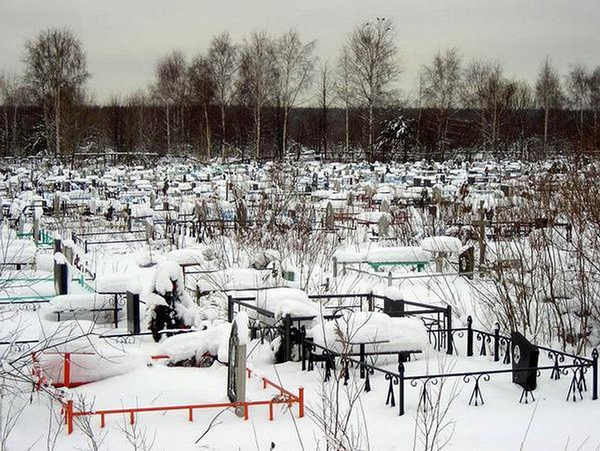
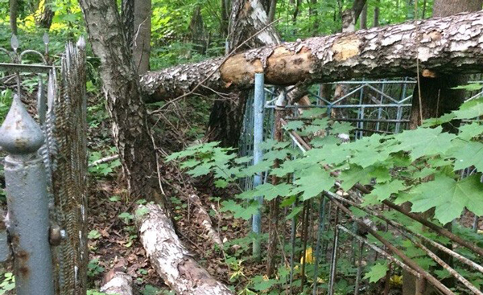

В Сыктывкаре благоустроят Верхнечовское кладбище за 5 миллионов рублей

В Сыктывкаре планируют облагородить кладбище в Верхнем Чове. Информация об этом появилась на сайте госзакупок.
Согласно бланку, размещенному на сайте, аукцион стартовал еще 31 мая, а продлится он до 18 июня. Начальная цена контракта — 5 миллионов рублей. Кстати, к участию в закупке допускаются только субъекты малого предпринимательства и социально ориентированные некоммерческие организации.
Выбранный исполнитель должен будет завершить работы по благоустройству на кладбище до 31 июля этого года.
- Новые сектора кладбища являются продолжением уже существующих. Муниципальный заказчик назначит ответственного для контроля за выполнением работ, соответствия материалов, техники, условиям контракта. Приемка работ будет происходить после каждого цикла ответственным лицом,- сообщается в закупке.
ЖИТЕЛИ АЛЕКСИНА ПРОДОЛЖАЮТ ЖАЛОВАТЬСЯ НА СВАЛКУ НА ТРОИЦКОМ КЛАДБИЩЕ

Жители Алексина продолжают жаловаться в социальных сетях на свалку на Троицком кладбище, расположенном в микрорайоне Бор.
Напомним, о состоянии этого некрополя ИА ТСН24 публиковало ряд материалов, в частности статья «Кто в ответе за тех, кого похоронили?». В конце мая текущего года администрация Алексинского района отчиталась об уборке свалки, однако местные жители выложили в Сеть новые снимки, на которых видно, что территория захламлена бытовым мусором и поваленными деревьями.
Горожане отмечают, что активисты направили свой отчет Руководителю регионального ОНФ Сергею Судницыну.
«Бардак захламление и отсутствие следов уборки на Троицком и на Соцгороде сухое дерево повредило машину местного жителя», — пишет один из активистов (орфография и пунктуация автора сохранена).
В свою очередь под постом в группе «Дежурный по Алексину» представители администрации напомнили, что «свалка, расположенная на территории Троицкого кладбища, ликвидирована 22 мая 2018 года силами МУП «Спецавтохозяйство г. Алексин» в рамках проведения Месячника по санитарной очистке и благоустройству территории муниципального образования город Алексин».
Городской активист Вячеслав Семенов раскритиковал качество уборки территории кладбища.